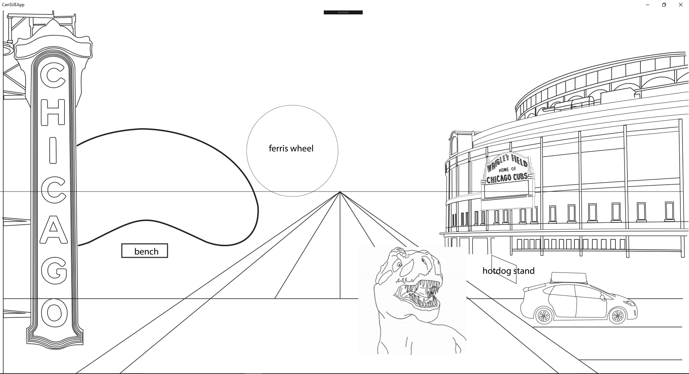
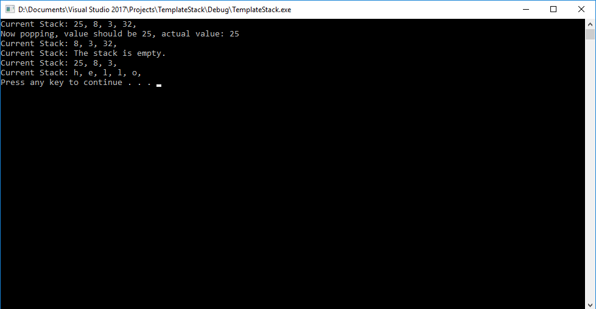
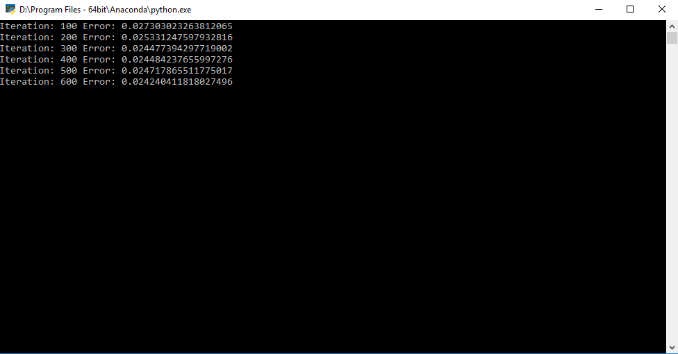
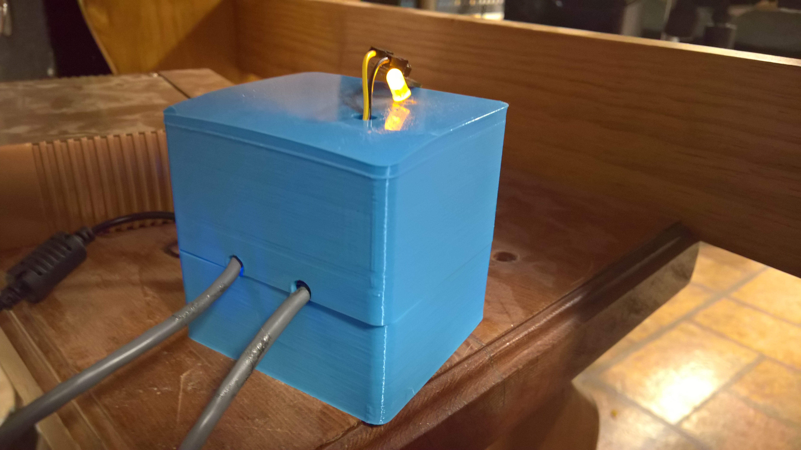
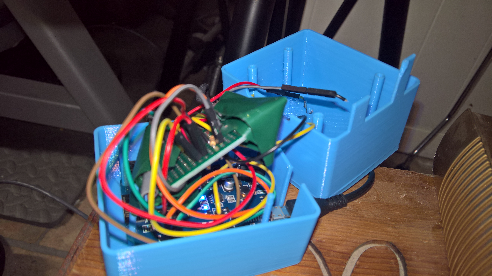
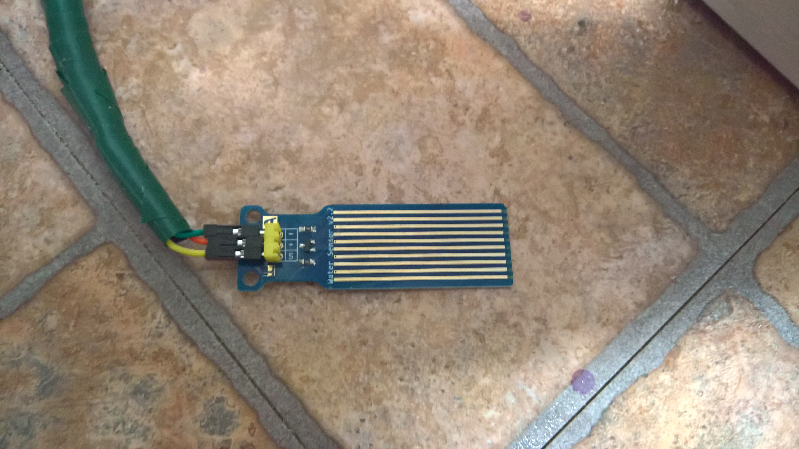

Can SUE Crush it?
This is the current project my capstone team is working on this semester. It is a UWP app that allows users to drag and drop a variety of Chicago specific items into the mouth of SUE the dinosaur's mouth to see if SUE has enough biting force to crush it. SUE is the T. rex skeleton housed in The Field Museum of Natural History in Chicago. Our task is to develop interactive software to be installed in the Field Museum's new SUE exhibit. This is one of two projects we are working on for this client and this is specifically the app that I am working on as a developer. This picture above is a rough visual layout of our assets that showcases what the user interface will look like once completed.
WPF Currency Project
This project was a demo/exercise for organizing multiple projects/libraries and building a WPF app using the MVVM design pattern. This project originally began as a simple Currency Library that leverages Object Oriented principles to create a library of abstracted Coin objects in two different types of currencies (US and UK) in the same hierarchy. These Coin Objects are managed by Currency Repo Objects, leveraging the Repository design pattern. I have also created an ASP .NET MVC version of this currency management demo leveraging the same Currency Library. That project is in a separate repo. This project also includes unit tests using Visual Studio's built in testing framework.
ASP.Net MVC Currency Project
This is the ASP.Net MVC version of my WPF Currency project, using the very same library and unit tests. This screenshot was taken while using Chrome as the browser.
UWP Flash Cards Project
This was one of my final projects last year for an Object Oriented Programming class. It is a simple UWP app that you can use to create digital flash cards of three varieties: multiple choice, matching, and fill in the blank. You can save a grouping of cards into a set and save it to a JSON file. The app handles the serialization/deserialization of the JSON files. I'd like to add in the future a new image card type.
C++ Synthesizer Project
This is a digital synthesizer created with C++ and the SFML library. It relies on keyboard input events to both play notes and change the varying settings including an amplitude envelope, filter, LFO, and 3 oscillators. Although the latency is low, it is technically not playing in real time, instead it computes the audio signal before the note is actually played. It does this by first computing the oscillator data, then passing it through the amplitude envelope and then the filter and LFO are calculated at the same time before finally being sent to the SFML audio buffer.
C++ Unreal Engine Drum Sequencer Project
This project is a Drum Sequencer I made with Unreal Engine and C++. It allows the user to create tempo synced loops of audio using a variety of interchangeable samples. The user can also change the tempo, start/stop the loop, and change the rhythmic value of the notes from quarter notes to eighth notes to sixteenth notes. It also features a visual feedback on the pads themselves to show which are active and what section of the loop is currently playing. I was actually able to use Unreal Engine's built in global timer to calculate the actual tempo values so that it is accurate.
Template Stack
This was just a fun little practice project I did to practice working with template classes in C++. I decided that implementing a common data structure would make for a good practice project, so I created my own implementation of a stack. This implementation uses a linked list to create a dynamically sized stack and of course uses templates to allow it to hold any data type. It is a quick implementation and not the most efficient, but it was a fun little challenge and I learned a lot from it. One of the main issues I had was a boat load of linker errors because the compiler couldn't find the definitions of the template classes as they were in separate files from the declarations in the header files. After doing some research I discovered that the best way around this problem was to use the Inclusion Model and simply define the classes in the header files instead.
FoodMe Web App
This was a project I worked on in my capstone class at Columbia. I worked with a team of artists, designers, and developers to build this simple web app, optimized for both desktop and mobile. It allows users to choose from a variety of options to narrow down a search for a restaurant to eat at(or order delivery from). It includes options such as estabishment type, cuisine/cultural type, budget, location, and many others. The user also gets the option to add in a zip code or use current location to find restaurants nearby. At any point, the user can click the FoodMe button, even if he or she added no input, and be taken to the results tab, which will give the user a restaurant from a narrowed down list of restaurants. The results tab also includes the location, ratings, and links to the menu and website information of the restaurant, all provided by Zomato. All options selected by the user is sent in a HTTP GET request to the Zomato API with Javascript, where it is queried and a list of restaurants is returned in the form of JSON text. The app will then parse the JSON into restaurant objects and from there one is randomly selected. If the user does not like the results, he or she can simply click the FoodMe button again and get a different result.
PyTorch Pitch Classifier
This project makes use of the PyTorch machine learning library to create a simple Deep Neural Netowrk that learns to classify pitch from audio files. I have started out with a very simple set of audio files. Each is a half-second long, normalized, mono (1 channel), and consists of a single waveform. I used a variety of simple sine, sawtooth, triangle, and square waves generated from the operator synthesizer in Ableton Live. This network performs much better than expected and can produce the correct predictions very quickly. I plan on moving on to more detailed and sophisticated instruments and sounds for the next iteration on this project and try to push the limits, perhaps eventually moving onto stereo (2 channel) audio.
Sound Conversion RNN
This project served as yet another Neural Network experiment in Python using the PyTorch Machine Learning library. The point of this experiment was to see if I could create a network that shifts the pitch and dynamics of a sound to closely match that of another sound.
I attempted to follow along the many tutorials and documentation on the PyTorch website to create a Long Short-Term Memory type Recurrent Neural Network. The code is messy as it stands, and I plan on scrapping much of it in the future when I give it another shot. At first, I was using simple, short audio samples such as snare and clap sounds and attempted to train the network to transform samples of my terrible beatboxing into realistic percussion sounds. The interesting part is that this actually worked very well...too well as the resulting audio sounded almost exactly like the samples the network trained on. This told me that the network was overfitting the data.
So, I decided to experiment some more and used a much larger vocal sample instead this time around. I used a sample of a vocal line from a female vocalist that was recorded in my home studio a while back. I then tried to math her voice as closely as possible and recorded myself singing the phrase, poorly I might add. This time I had to tweak the network quite a bit and was forced to break the audio pieces into much larger batches to speed up the training. I also attempted at this point to experiment with using my graphics card to much of the matrix calculations (hence the. cuda() everywhere in the code).
While not exactly what I had anticipated, the results were still very interesting. The network totally warped my voice and you could begin to hear the pitch and energy of my voice starting to rise and fall with the pitch of her voice. I created several revisions and saved all the exported audio, but it came to a point where the tweaks weren't enough to dramatically improve the results.
I think my biggest mistake so far has been using stereo audio. This not only doubles the amount of audio data, but also heavily complicates the computations and code. When I revise it, I plan on converting the audio to mono (1 channel) and simplifying things a bit. I also think it would be more beneficial to target specifically the pitch and allow the network to compute the resulting audio based solely on pitch. I am currently looking at all my options to extract pitch, even creating my own pitch classifier that may come of use in the project.
All in all, I learned a ton from this project and can't wait to reboot it with new ideas and code!
Click here to see the code on Github
Numpy XOR Neural Network
A very simple numpy implementation of a 3-layer Neural Network that learns a generic XOR pattern. Based off of Trask's "A Neural Network in 11 lines of Python" blog post. This implementation is slightly different because I am using Stochastic Gradient Descent and Online Training to train the network one example at a time, each of which is randomly choosen. Although it takes longer to train, it has much better results, yielding a smaller error at the end of training and generalzing better on test sets.
Water Detection System
  This was a fun little project I worked on as a Christams gift to my parents. It is essentially a small scale water detection system, and was much needed! It works by first connecting to the internet upon receiving power, then begins constantly reading valeus from two separate water sensors. Once one of the sensors touches water, it reads high voltage and triggers an event. The event handler sends an HTTP request to IFTTT (If This, Then That), a free web service, which in turn sends a text to my mother's phone that water was detected and which sensor was triggered. I used a small prototyping board comparable to the Arduino Uno with a built in WIFI shield to handle all the code. I still wrote the code in the Arduino software. I spliced a 100 foot CAT 5 cable into two smaller cables and soldered one end of each to my PCB board and the other end to jumper wires hooked up to the water sensors. The setup also includes a custom reset button and an LED that indicates that the device is connected to the WIFI network. Lastly, I 3D printed my own custom enclosure for the wiring and baord that I designed in Autodesk Fusion 360. I had a blast working on this and learned a lot about circuitry. I was able to apply much of what I had learned from my previous Physical Computing class and of course this was one of my first major projects using my 3D printer!